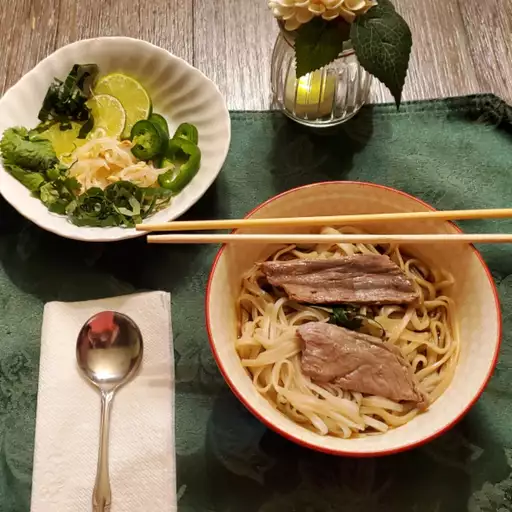

Authentic Pho

A Mouth Watering Experience
The national dish of Vietnam and very popular and can almost find it anywhere you go no matter where you are. The flavorful piping hot broth which takes hours to make is poured over rice noodles and thinly sliced beef and is the ultimate experience for your tastebuds. Just know this soup is worth the wait.
Ingredients
- 4 pouns of beef soup bones (shank and knee)
- 1 medium onion, unpeeled and cut in half
- 5 slices of fresh ginger
- 1 tablespoon of salt
- 2 pods of star anise
- 2 ½ tablesppons fish sauce
- 4 quarts of water
- 1 (8 ounce) package of dried rice noodles
- 1 ½ pounds beef top sirloin, thinly sliced
- ½ cup chopped cilantro
- 1 tablespoon chopped green onion
- 1 ½ cups bean sprouts
- 1 bunch Thai basil
- 1 medium lime, cut into 4 wedges
- ¼ cup hoisin sauce (optional)
- ¼ cup chile-garlic sauce (such as Sriracha®) (optional)
Steps
- Roast the beef bones and onions until the bones are browned and the onions are soft.
- Combine roasted beef bones, roasted onions, ginger, salt, star anise, fish sauce, and water in a large stockpot. Allow to simmer for 6 to 10 hours. Then, strain the broth into a new saucepan.
- Allow dry rice noodles to soak for 1 hour. While they're soaking, bring broth to a simmer.
- Cook the rice noodles in boiling water. Drain and add noodles to a bowl topped with sirloin, cilantro, green onion, and broth. Garnish with your desired toppings.